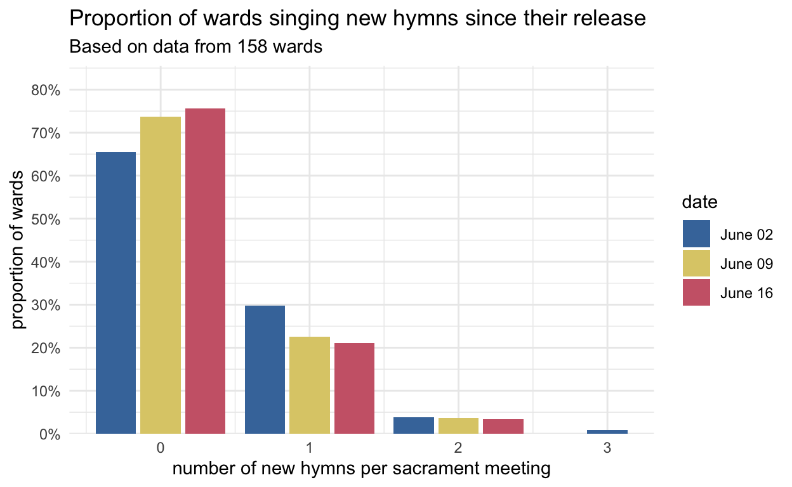
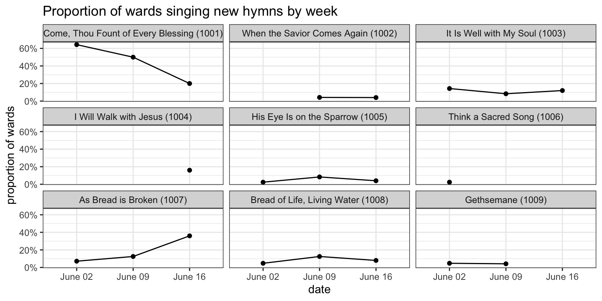

The third Sunday with new hymns!
general
frequency
new hymns
This is the third week since new hymns were introduced! We had some competition with Father’s Day this year, so I was curious to see what the hymns would be. Currently I have did data from 74 wards. Two weeks ago, I found that about half of wards introduced new hymns, with about two thirds of those singing
Note
Note that this blog post will update as I collect more data. I originally collected data from 71 wards when I first published this post. As more come in, we’ll have a more accurate view of what happened.
Looks like things are about the same as where they were last week. About a quarter of wards introduced a new hymn this week. The following plot shows how many new hymns were introduced each week.
The numbers are lower than I expected. Fewer wards are singing new hymns than I expected. However, a lot of my data comes from single-week contributions from various wards, so just just because a ward didn’t sing a new hymn this week doesn’t mean they haven’t done any yet.
To see what proportion of wards have introduced new hymns up to this point, I took a look at the wards that I have data from from every week since the first batch of hymns came out. Currently, that’s 25 wards. Around half of them haven’t sung new hymns at all yet. Only 11% of wards have sung at least one new hymn each week so far.
Earlier, I showed that
| What new hymns were sung on June 16, 2024? | ||
| Based on the wards that sang new hymns | ||
| new hymn | wards | proportion |
|---|---|---|
| As Bread is Broken (1007) | 8 | 42.1% |
| Come, Thou Fount of Every Blessing (1001) | 3 | 15.8% |
| I Will Walk with Jesus (1004) | 3 | 15.8% |
| It Is Well with My Soul (1003) | 3 | 15.8% |
| Bread of Life, Living Water (1008) | 1 | 5.3% |
| His Eye Is on the Sparrow (1005) | 1 | 5.3% |
| When the Savior Comes Again (1002) | 0 | 0.0% |
| Think a Sacred Song (1006) | 0 | 0.0% |
| Gethsemane (1009) | 0 | 0.0% |
| Hail the Day that Sees Him Rise (1201) | 0 | 0.0% |
| He Is Born, the Divine Christ Child (1202) | 0 | 0.0% |
| What Child is This? (1203) | 0 | 0.0% |
| Star Bright (1204) | 0 | 0.0% |
If we compare these proportions across weeks, we can get a glimpse into some trends. The figure below shows what proportion of wards sang what hymns each week.

The drop in
Combining now all three weeks so far, we can see when these hymns tend to be sung and get an overall look at the popularity of the first batch of hymns. Looks like
| When were new hymns sung in sacramnt meeting? | ||||
| Since June 2 | ||||
| New Hymn | Opening | Sacrament | Intermediate | Closing |
|---|---|---|---|---|
| Come, Thou Fount of Every Blessing (1001) | 15 | 0 | 3 | 21 |
| When the Savior Comes Again (1002) | 0 | 0 | 0 | 1 |
| It Is Well with My Soul (1003) | 2 | 0 | 1 | 7 |
| I Will Walk with Jesus (1004) | 1 | 0 | 1 | 1 |
| His Eye Is on the Sparrow (1005) | 1 | 0 | 0 | 3 |
| Think a Sacred Song (1006) | 1 | 0 | 0 | 0 |
| As Bread is Broken (1007) | 0 | 13 | 0 | 0 |
| Bread of Life, Living Water (1008) | 0 | 5 | 0 | 0 |
| Gethsemane (1009) | 0 | 2 | 0 | 1 |
Finally, we can get an overall look at how popular the new hymns are compared to each other. Again, Tom Anderson is distributing a survey on social media to keep track of what hymns new are sung. He has generously allowed me access to the results. Thanks, Tom!
When combined with my data, we can start to get a good picture of how much more common some hymns are compared to others. Note that the proportion column in this table refers to the proportion of new hymns sung. Another way of thinking of it is this: given that a new hymn will be sung, what are the odds that it’ll be, say,
| New hymns' popularity since June 2, 2024? | ||
| Based on 230 sacrament meetings that had new hymns | ||
| wards | new hymn | proportion |
|---|---|---|
| 81 | Come, Thou Fount of Every Blessing (1001) | 48.80% |
| 25 | As Bread is Broken (1007) | 15.06% |
| 25 | It Is Well with My Soul (1003) | 15.06% |
| 10 | I Will Walk with Jesus (1004) | 6.02% |
| 9 | Bread of Life, Living Water (1008) | 5.42% |
| 8 | His Eye Is on the Sparrow (1005) | 4.82% |
| 4 | Gethsemane (1009) | 2.41% |
| 2 | Think a Sacred Song (1006) | 1.20% |
| 2 | When the Savior Comes Again (1002) | 1.20% |
That’s it for now! Stay tuned for next week’s post!